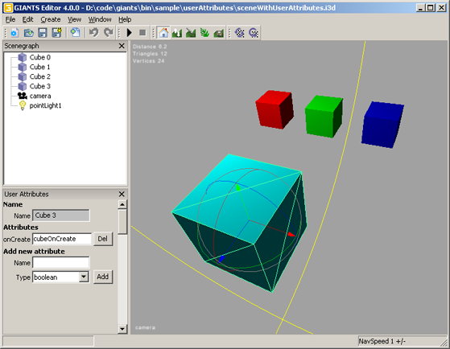

Tutorial 3 - User Attributes
Sample name: SampleUserAttributes
Script source code file: sample/userAttributes/main.lua
The goal of this tutorial is to show you
- how to create user attributes
- how to access user attributes from script
- how to use the onCreate script callback
getUserAttribute()
setUserAttribute()
setScale()
translate()
Open sceneWithUserAttributes.i3d and main.lua which are located in \sample\userAttributes.
Run the sample SampleUserAttributes.exe. You see three cubes with different scales and one cube that is rotating. If you press 1,2 or 3, the related cube is translated onto the y-axis and the number of translations is also displayed.
If you look at sceneWithUserAttributes.i3d in the editor, you will see, that all three cubes in the back have the same size. Open the User Attributes window.

In the User Attributes window you see the name of your object, followed by the user attributes and at the bottom there is the possibility to create new attributes. Select the different objects to see what kind of user attributes they have.
You’ll notice that both cubes in the back have two user attributes labeled count and size. The bigger cube in the front only has an onCreate script callback.
How to create new user attributes
To create your own attributes, just enter the name of your attribute and then choose the according type of your attribute. You can choose whether your attribute is a boolean, integer, float, a string or a script callback. Then hit add and your attribute will appear.
Let’s have a look at the LUA code in main.lua. The very first line of code is the creation of an empty array called cubeIdArray.
init()
You should be familiar with the first two lines, otherwise have a look at Tutorial 1.
What follows is a for loop from 0 to 2 where the array cubeIdArray is filled up with three new arrays containing the cubeIds of the three cubes.
Then the variable size gets filled with the result of the getUserAttributes function. The getUserAttributes function needs the id of the object and the name of the attribute as arguments. Be careful here, the name has to be exactly the same as you have specified in the editor.
Finally, there is a check whether size has a value and then the function setScale is used to scale the cube accordingly. Try to enter new size values in the i3d and then see the result by running the program.
|
for index=0, 2 do
-- Get current cube id and store it for later local cubeId = getChildAt(i3dRoot, index); cubeIdArray[index] = {}; cubeIdArray[index].id = cubeId; -- Get scale value from user attributes local size = getUserAttribute(cubeId, "size"); if size ~= nil then -- Set scale of current cube setScale(cubeId, size, size, size); end; end; |
keyEvent()
First we check if esc is pressed.
Then, if the keys 1,2 or 3 are pressed, the rest of the code is executed. The id of the corresponding cube is stored within the variable cubeId. Then the count of the cube is stored in the variable count by using the return value of the function getUserAttribute. If the count isn’t nil, the count is increased by one using the setUserAttribute function.
The setUserAttribute function can either be used to create new attributes or to overwrite values of existing attributes. It uses the id of the object (cubeId), the name of the attribute("count"), the data type(Integer) and the new value as arguments(count+1). Finally, the corresponding cube is translated onto the y-axis with the value 0.1 using the translate function.
|
if isDown == true then
-- Check for escape key if sym == Input.KEY_esc then -- Request quit requestExit(); end; -- Check for key 1 to 3 if sym >= Input.KEY_1 and sym <= Input.KEY_3 then -- Get id of current cube local cubeId = cubeIdArray[sym-Input.KEY_1].id; -- Get count user attribute local count = getUserAttribute(cubeId, "count"); if count ~= nil then -- Set count user attribute setUserAttribute(cubeId, "count", "Integer", count+1); -- Translate cube a bit translate(cubeId, 0, 0.1, 0); end; end; end; |
cubeOnCreate(id)
This function isn't called anywhere in the LUA code. So what is it used for? As soon as the cube in the front gets loaded, its attribute script callback causes the function cubeOnCreate to run once. The script also provides the id of the object that caused the script callback. Be careful with the spelling, the function in your LUA script has to be exactly the same as your ScriptCallback in the i3d. What we do in the cubeOnCreate function is quite simple: we store the id in the new variable rotatingCubeId.
|
function cubeOnCreate(id)
-- Store the id for later rotatingCubeId = id; end; |
update(dt)
Here we first check if rotatingCubeId exists and then we rotate the cube using the rotate function with the id we stored in the variable rotatingCubeId.
|
function update(dt)
-- Rotate cube3 if rotatingCubeId ~= nil then rotate(rotatingCubeId, 0, 0.05, 0); end; end; |
draw()
Here you can see how flexibly you can use the renderText function: using it within a for loop, for welding text and variables as well as for calling functions like the getUserAttributes in this case.
|
function draw()
for index=0, 2 do renderText(0,0.95-index*0.05, 0.04,"Cube " .. index .. ": " .. getUserAttribute(cubeIdArray[index].id, "count") .. " press key " .. index+1); end; end; |
Latest Versions
 Newsletter
Newsletter
18 June 2009
GIANTS SDK v4.1.3
GIANTS Editor v4.1.4
GIANTS Script Debugger v4.1.3
30 December 2009
GIANTS Editor v4.1.2
Maya Exporter Plugins v4.1.5
3Ds MAX Exporter Plugins v4.1.5
Blender Exporter Plugins v4.1.5
Newsletter
Subscribe to our newsletter and keep yourself informed about updates and new releases of the GIANTS engine. Register here.